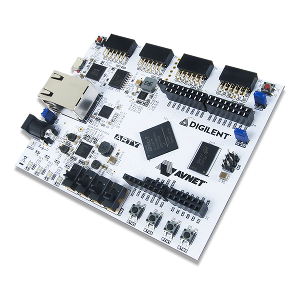

Welcome to Arty CM0 DesignStart project
Under construction
This github repository provides the necessary files to use the DesignStart Cortex-M0 system on a Digilent ARTY FPGA board.

This project does not include the source code of the DesignStart Cortex-M0. You have to request it directly from ARM.
In addition to allow synthesis of the designstart to a Xilinx target, this project allows also simulations using the simulation tools :
- Icarus iverilog
- Xilinx simulation tools (xvlog/xelab/xsim)
- Verilator
Project layout
common # shared files for configuring the projects
ips # Modules created using Xilinx Vivado
rtl # Verilog RTL files for the project
sim # Verilog simulation directory
synt # synthesis directory
verilator_sim # Verilator build/simulation directory
software # Local testsuites (asm/c programs)
import # imported github submodules (currently only amba_components)
docs # the mkdocs/markdown sources for this site
site # generated html/js files for this site
Installation
Cloning from github
This project uses submodules. To clone it you need to run the following commands :
git clone git@github.com:rbarzic/arty-cm0-designstart.git
cd arty-cm0-designstart
git submodule init
git submodule update
Setting environment variables
The ARM Cortex-MO designstart package is not included in this project. You must download it yourself and setup the DESIGNSTART_TOP variable to point to the directory it had be installed in :
export DESIGNSTART_TOP=<Path to Cortex-M0 designstart top folder>
Patching Cortex-M0 designstart folder
The code provided by ARM needs to be modified. The changes are gathered in a patch file.
make -C patches patch
Compiling test programs
Test programs are located under the software directory.
To compile, enter the directory of the program and type :
make all
Several files (bin, hex, vmem and vmem32,..) should be created
Simulation using Icarus iverilog
Go into a test program directory (under software/xxx) then :
# Compile C code
make all
# build iverilog simulator files
make comp
# run the simulation
make run
# optionaly, you can look at waveform using gtkwave
make wave
Note : there is no way to stop the simulation from the C code currently. Hit Ctrl-c then type $finish to exit simulation